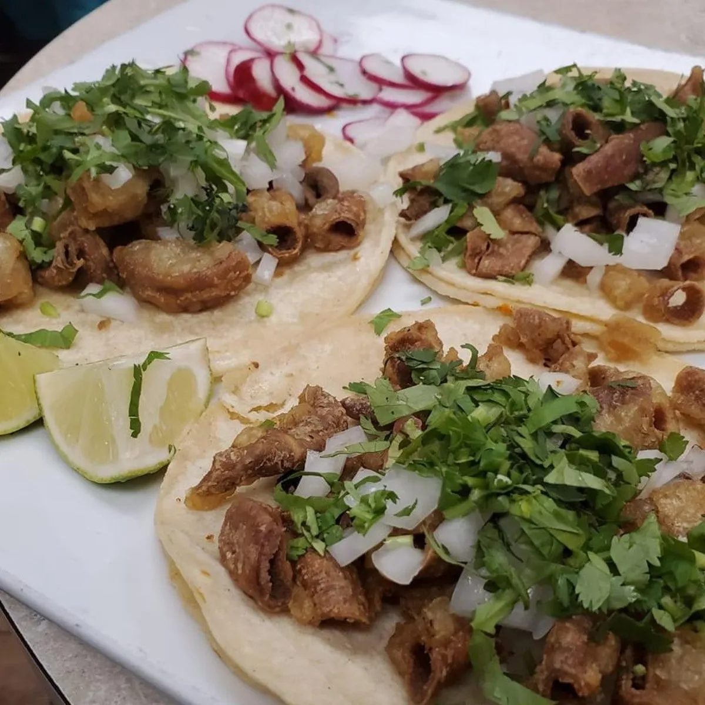

Tacos de Tripitas

Description
Also known as Chitterling tacos. If you're into textures, you'll love the crunchyness from these tacos and the flavor it
brings to the pallet. Some may never try them as they come from the pig's intestines. If you don't
mind that fact, then this recipe is for you.
Ingredients
- 4 Pounds of small beef intestines tripas.
- Enough water to cover the “tripitas” to cook in a large pot.
- 1 teaspoon salt
- 2 Tablespoons of vegetable oil
- Corn Tortillas
- 1 white onion finely chopped
- 1 bunch of cilantro finely chopped
- Salsa of your choice
- Salt to taste
Steps
- Fill a large pot with water and turn the heat to about medium-high.
- Thoroughly clean and rinse the tripe. Do this step very quickly: if you leave
it too long in the water you will have rubbery tripitas as an end result. Drain well.
The tripitas sold in USA supermarkets are usually sold clean but a little rinse doesn’t hurt.
- Simmer the tripitas in the covered pot for 30 minutes in a low heat. They should be soft when ready.
Let them cool, a layer of fat will form on the surface of the broth. Remove the fat. Drain the tripitas
on paper towels and cut into small bite size, about 1 inch long.
- Now, in a skillet, place about 2 tablespoons of oil. When it gets hot enough
place the tripitas and fry for about 8 to 10 minutes until they are golden outside
but still soft on the inside. If you leave them longer they will be hard.